UDN
Search public documentation:
ViewModesJP
English Translation
中国翻译
한국어
Interested in the Unreal Engine?
Visit the Unreal Technology site.
Looking for jobs and company info?
Check out the Epic games site.
Questions about support via UDN?
Contact the UDN Staff
中国翻译
한국어
Interested in the Unreal Engine?
Visit the Unreal Technology site.
Looking for jobs and company info?
Check out the Epic games site.
Questions about support via UDN?
Contact the UDN Staff
ビュー モード
ドキュメントの概要:ゲームおよびエディタで利用できる、様々なビュー モードの紹介。 ドキュメントの変更ログ: Joe Graf により作成、 Andrew Scheidecker? 、 Dave Nash 、 Niklas Smedberg 、 Daniel Vogel および Daniel Wright により更新。モード
ビュー モードは、相互に排他的なレンダリングのスタイルです｡ビューポートで表示できるのは、ひとつのアクティブ ビュー モードだけです。エディタでは、ビュー モードはビュー モードのツールバーの右コンボ ボックスで選択されています｡ゲームでは、ビュー モードはviewmode コマンドを使って変更します｡
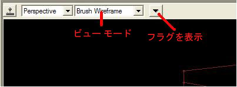
サポートされているプラットフォーム
Unlit およびShader Complexityはコンソールでサポートされておらず、残りのviewmodes はすべてのプラットフォームにて動作します。Wireframe (ワイヤーフレーム)
このモードでは、すべてのメッシュのワイヤフレームを見ることが出来ます｡コマンド:
viewmode wireframe (ビューモード ワイヤーフレーム)
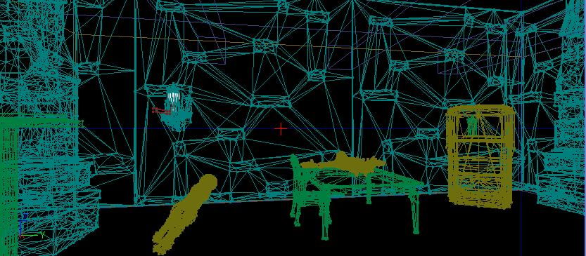
Brush Wireframe (ブラシ ワイヤーフレーム)
このモードでは、アクタと CSG ブラシのワイヤフレームを見ることが出来ます｡ワイヤフレームは非表示です｡このモードはエディタでのみ利用できます｡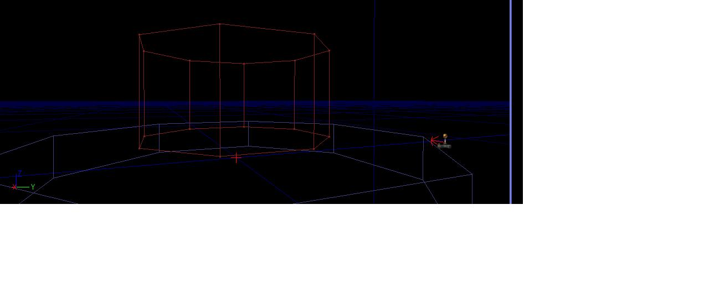
Unlit(アンリット)
このモードでは、各メッシュで使われるマテリアルの拡散チャネルを見ることが出来ます｡コマンド:
viewmode unlit (ビューモード アンリット)
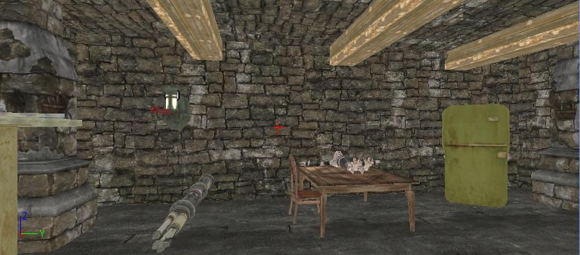
Lit (リット)
このモードでは、ライティングの影響を受けるメッシュに使用されているマテリアルを見ることが出来ます｡ゲームではデフォルトのモードです｡コマンド:
viewmode lit (ビューモード リット)
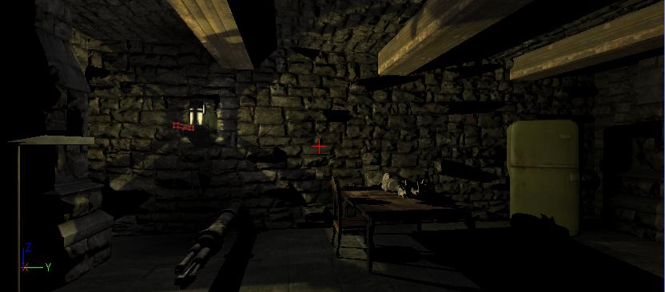
Lighting Only (ライティングのみ)
このモードでは、ライティングの影響を受けるグレー マテリアルを持つメッシュを見ることが出来ます｡コマンド:
viewmode lightingonly (ビューモード ライティングのみ)
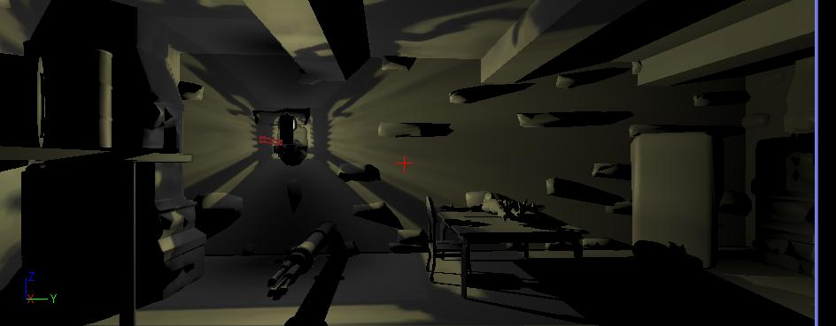
Light Complexity (ライト複雑度)
このモードでは、メッシュに影響するライトの数に基づいたソリッド カラーのメッシュを見ることが出来ます｡コマンド:
viewmode lightcomplexity (ビューモード ライト複合度)
下記の方法によると（GameEngine.iniで定義される）、 = viewmode lightcomplexity= (ビューモード ライト複雑度)のメッシュ彩色は、 skylights または、 lightmapsでないメッシュに影響しているライトを示しています。:«#Lights:Mesh Color
0: (R=0,G=0,B=0,A=1)
1: (R=0,G=255,B=0,A=1)
2: (R=63,G=191,B=0,A=1)
3: (R=127,G=127,B=0,A=1)
4: (R=191,G=63,B=0,A=1)
5: (R=255,G=0,B=0,A=1)
ゲームプレイ中(例： 銃口の閃光、爆発、など)、ほとんどの動的ライトは Spawn (スポーン)されるため、ライトの複雑度は、ゲームでの表示に重要なものです。
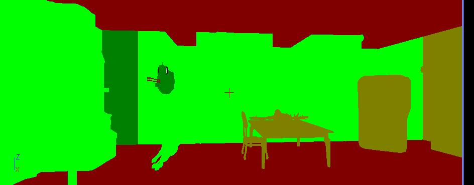
Texture Density(テクスチャ密度)
このビューモードは、下記の 2 つに使用されます。:- 一番重要となるサーフェスでテクスチャの解像度が高くなっていること確認する（例：カメラに近く、最上部で高くない)。
- 高解像度のテクスチャが低解像度のテクスチャの隣にあるかどうかを確認する (テクスチャ解像度でシャープなコントラスト)。これは、表示が悪くなります。
viewmode texturedensity (ビューモード テクスチャ密度)
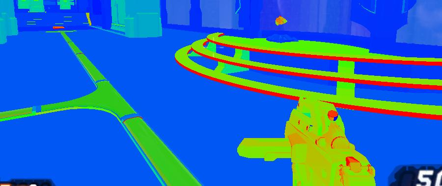
Shader Complexity (シェーダ 複雑度)
Shader Complexity ビューモードは、各ピクセルにて何個のピクセルシェーダ命令が実行されたかを視覚化します。複雑度の総数は、[エミッシブ + (各lighting pass、translucency、distortionおよび fog volumesの命令)] をレンダーするために使用された命令の数として演算されます。height fog、ポストプロセスと他の効果は計算に入れませんので留意してください。累積命令カウントは、最小ピクセル用の明るい緑から暗い緑へ、次は、暗い赤から最大ピクセル用の明るい赤へ、そして命令カウントが300で明るい赤にマップされます。2009年9月(まだリリースされていません)QAビルドではその範囲が拡張され、ピンクは、命令カウント600、白は900シェーダ命令となります。マスクされたマテリアルもまた、このQAビルド以降でさらに正確に表記されます。 命令カウントはシェーダ複雑度を演算するのみに使用されます。これは、常に正確ではありません。例えば、16 のシェーダ命令、すべてのテクチャは、すべてのプラットフォームで16 のシェーダ演算命令より処理が非常に遅くなります。また、ロールされていないループを含むシェーダは、命令カウントで正確に描写されません。これは主に、頂点シェーダの問題です。全体を通して、命令カウントは、多くのケースにおいて良い測定基準です。 下記はshader complexityを使用時に、注意していただきたいことです:- エディタおよびゲーム内(またはPIE)の両方にあるレベルのshader complexity を必ず確認してください。これによりレベルのコストが高すぎる、動的にスポーンされたエフェクトライトなどのgameplay 要素がパフォーマンス低下の原因となるかどうかを絞りこむことができます。
- 静的ライティングが伴うものはすべて緑になっているべきです。理由として、emissive やlightmap はそれらのオブジェクトをレンダリングするために使われるため、コストが非常に安いからです。静的オブジェクトが不意に赤になっている場合は、ライティングビルドがあることを確認してください。 * Terrain は、ライティングビルドがあっても、頻繁に赤になります。 これは、結合されたテレインマテリアルが非常に複雑なためです。テレインが頻繁に多くのピクセルを使用するため、各レイヤのマテリアルをできるだけ単純に作成することは重要なことです。
- パーティクルシステムは、膨大な量のオーバードローのため、通常赤(またはそれ以上にひどい)になります。
viewmode shadercomplexity
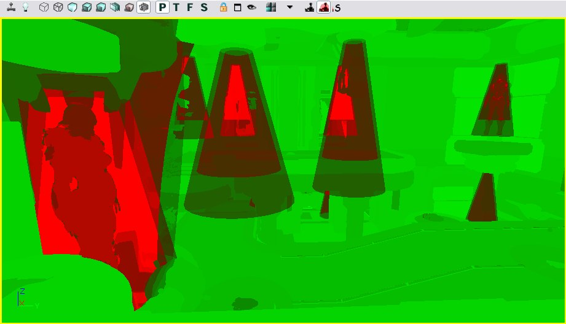
Lightmap Density(ライト密度)
このモードは、テクスチャマップされたオブジェクトのlightmap density (ライトマップ密度)を表示し、理想/最大密度設定の関係でカラーコーディングし、実際のlightmap テクセルへマップするグリッドを表示します。 カラーモードの使用時:- 青は理想テクセル密度より以下を意味します。
- 緑は理想テクセル密度を意味します。
- 赤は最大、または以上のテクセル密度を意味します。
- MinLightMapDensity=0.0
- IdealLightMapDensity=1.0
- MaxLightMapDensity=3.0
viewmode lightmapdensity
Lit Lightmap Density(Lit ライト密度)
このモードは'Lighting Only'(ライティングのみ)モードと同じですが、オブジェクトがマップされたテクスチャはlightmap テクセルにマップするグリッドを表示します。 Command:viewmode litlightmapdensity
Editor-only modes (エディタのみ モード)
Property Coloration (プロパティ 彩色)
このモードは特定のプロパティ値を持つアクタの表示をします。Shit を押し、プロパティウィンドウのプロパティでクリックしてマークをつけます。エディタビューポートにある Property Coloration (プロパティ彩色) フラグ表示を有効にし、同じプロパティ値のそのタイプのオブジェクトすべては、赤でハイライトされます。同じプロパティ値のオブジェクトは、右クリックメニューで選択することもできます。
現在、プロパティの比較値は正確です。たとえば、明るさ 1.0 のライトは、明るさ 1.0 のライト1.001 と同じにみなされません。.
Occlusion Preview (オクルージョンプレビュー)
このモードは、エンジン錘台カリングとオクルージョンの表示を有効化します。 perspective level viewport (パースぺクティブレベル ビューポート)上の、一番右側にある 目 のマークのボタンをクリックしてアクティブにします。(下記に赤で分類されているものです。新しいデザインに変更中です。)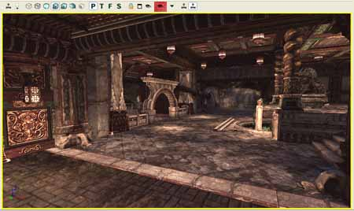
有効化されたオクルージョンプレビューモードで、他のビューポートは 子オクルージョン とみなされ、 親オクルージョン ビューでレンダリングされているもののみをレンダリングします このモードは、オクルージョンのプレビュー(つまり、 特定の表示用のエンジンにより何が厳密に描かれているかを決定する)と同様、ワイヤーフレーム表示をクラッタなしで表示するのに便利です。 下記に表示されているのは、オクルージョン表示モードが左で 無効 に、右では 有効 になっている、前/後のortho ビューポートのイメージです。ピンクのビューフレームは、 親オクルージョン のビューポイントが一体どこにあるのかを表示しています。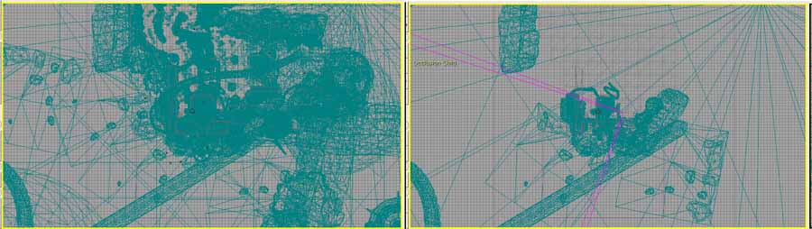
下記にあるのは、別の前/後のイメージです。今回のものは、投影図に設定された 子 のビューポートで、異なる場所に移動されました。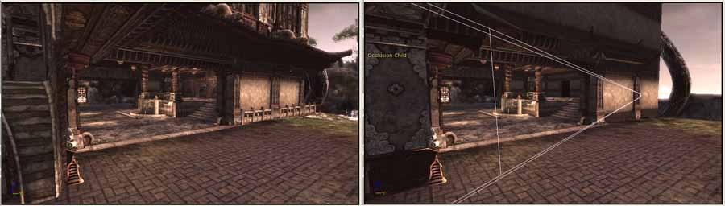